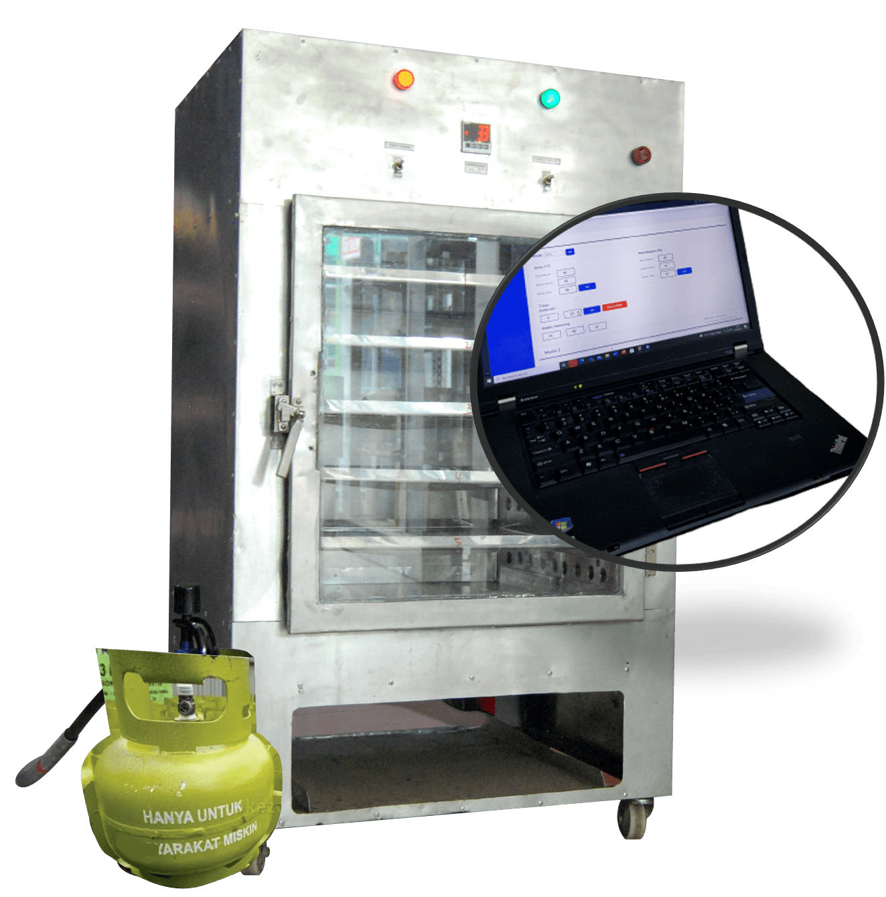

Mesin Dehidrator dengan Teknologi Far-Infrared Guna Meningkatkan Kualitas Produk UKM Mie
Deskripsi

Suatu inovasi teknologi yang siap diimplementasikan kepada UKM Mie berupa mesin dehidrator mi dengan
memanfaatkan teknologi far-infrared dengan gelombang elektromagnetnya terserap langsung kedalam
produk sehingga dapat mengurangi kebutuhan energi. Pemanasan dengan infrared banyak memberikan
keuntungan diantaranya, laju pengeringan yang cukup tinggi, hemat energi serta distribusi suhunya
seragam sehingga menghasilkan mutu produk yang lebih berkualitas.
Spesifikasi
Ilustrasi Alat:
Berikut ini merupakan ilustrasi alat:
Sistem Pemanas
Sistem pemanas merupakan bentuk perlakuan dalam proses pengeringan pada mie. Sistem pemanas
berbentuk seperti chamber dengan dimensi ukuran 72 cm x 58 cm x 125 cm yang di dalamnya tersusun
5 loyang.
Sistem kendali proporsional integral
Proses dehidrator mi sehat dengan memanfaatkan infrared heater menggunakan sistem closed loop
dengan parameter suhu dan kelembaban sebagai nilai set point yang telah ditentukan dan akan
dibandingkan dengan keadaan sesungguhnya (aktual) dari suhu dan kelembaban yang terdapat dalam
kabin mesin dehidrator.
Sistem Monitoring
Sistem ini tersusun dari mikrokontroler, sensor suhu dan kelembaban untuk mendeteksi suhu dan
kelembaban ruang pada sistem pemanas. Hasil pengontrolan akan ditampilkan pada layar LCD alat
dan web yang dapat diakses menggunakan computer personal ataupun smartphone pengguna. Selain itu
parameter lain yang dimonitoring yaitu waktu proses pengeringan.